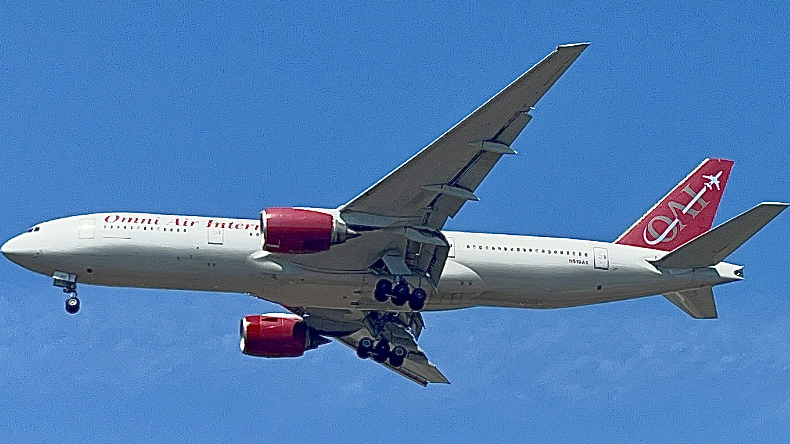

An Omni Air International Boeing 777-2U8(ER) made a rare visit to JFK Airport on April 10, 2026. Flight OAE3939 (Omni Air Express 3939) departed from San Jose del Cabo Los Cabos International Airport at 3:58 AM MST, 1 hour and 48 minutes later than its scheduled departure of 2:10 AM MST. The aircraft arrived 2 hours and 1 minute later than scheduled, arriving at 11:39 AM EDT instead of its scheduled arrival time of 9:38 PM EDT. The aircraft (Registration N819AX) showed up as a blocked Boeing 777-2U8(ER), with no flight information available. at 3:56 PM EDT, OAE3939 took off from John F. Kennedy International Airport on Runway 22R, en route to Baltimore-Washington International Airport.
Omni Air International is rare at JFK because it is a specialized charter and wet-lease operator, not a scheduled passenger airline. Their rare appearances are usually for niche operations, such as military troop transport, sports team charters, or repatriation flights, rather than regular daily service, making them a unique sighting compared to commercial carriers.
Omni Air International is a Tulsa-based FAA Part 121 charter airline founded in 1993, specializing in passenger charters, ACMI (Aircraft, Crew, Maintenance, and Insurance) wet leasing, and military troop transport. A subsidiary of Air Transport Services Group (ATSG) since 2018, it operates a worldwide fleet of Boeing 767 and 777 aircraft, serving government and commercial clients.
N819AX is an active 21.9-year-old Boeing 777-2U8(ER) (MSN 33681/LN 479) operated by Omni Air International. First flown in June 2004, this passenger aircraft is powered by two Rolls-Royce Trent 892 engines. It is currently registered to Cargo Aircraft Management Inc. and utilized for charter operations.